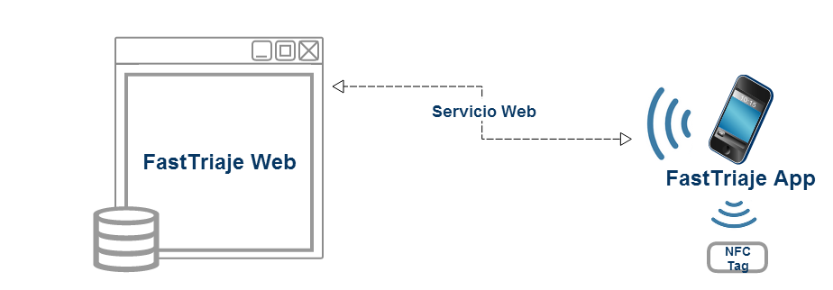

Información segura en entornos médicos.

Alexandra Rivero-García
Directora: Candelaria Hernández-Goya
Codirectora: Pino Caballero-Gil
Índice

- Medicina y tecnología actual.
- Enfoque del doctorado.
- Tareas realizadas.
- Tareas realizadas.
Evolución de la medicina.
-
Sociedad de la Información
-
Tecnologías de la Información (TICs)
El método de trabajo en la medicina no ha sido el mismo desde sus orígenes,
esto se ha producido sobre todo por la llegada de la era digital o de la sociedad de la información que estamos viviendo hoy en día.
Gracias a la influencia de las TIC en la sociedad se han desarrollado nuevas formas de relacionarse y trabajar que previamente eran inimaginables.
eHealth
práctica de cuidados sanitarios apoyada en tecnologías de la información y las comunicaciones.
Aportaciones eHealth
-
Productividad
Precisión
Eficiencia
-
Accesibilidad
Movilidad
-
Transparencia
-
Gestión
Calidad de Servicios
-
Seguridad
Las TICs realizan una labor de apoyo a la medicina que permite una práctica diferente de la misma,
a la vez que mejora aspectos como su productividad, precisión y eficiencia.
No sólo esto, sino que aporta nuevas características que antes no se distinguían, como puede ser, accesibilidad, movilidad,
se puede generar una interacción entre paciente y médico que supera las barreras geográficas y temporales, acortando tiempos de espera, evitando desplazamientos e incluso permitiendo el diagnóstico y tratamiento a distancia
transparencia, gestión y calidad de servicios.
No sólo esto, sino que pueden ser desarrollados en diversos lugares, como centros hospitalarios, puestos sanitarios, en la vía pública, el hogar, centros recreativos, escuelas, lugares de trabajo o cualquier otro lugar que se nos ocurra
Siempre teniendo en cuenta un aspecto fundamental... Ley Orgánica de protección de datos
Datos de los pacientes
sin infraestructura de red comunicaciones caídas recursos limitados
desastres naturales, saturaciones de redes
Entornos extremos
- Problemas en las comunicaciones
sin infraestructura de red comunicaciones caídas recursos limitados
desastres naturales, saturaciones de redes
Objetivos de la Tesis
- Diseño, planificación e implementación.
- Intercambio de información telemedicina, triage, monitorización y vigilancia de enfermos.
- Sistemas basados en protocolos seguros.
- Últimas tecnologías.

sistemas que mejoren las soluciones actuales. siempre pensando en la utilidad práctica. estudiar mejoras y aplicaciones en la medicina, tanto para potenciar el intercambio de información en la telemedicina como para posibilitar el triaje [6] a distancia, la monitorización y vigilancia de enfermos.
tanto para la proteccion de los datos como de las comunicaciones
basando estos desarrollos en las últimas tecnologías
Long Term Evolution
Tecnologías en comunicación y dispositivos físicos
¿Qué se ha realizado?
- Situacion de emergencia.
- Clasificación de víctimas (Triaje).
- Priorización de la atención.
- Smartphones + Etiquetas NFC.

Triage
-
Primer Triage:
Métodos rápidos (SHORT, SIEVE o START).
-
Segundo Triage:
Puesto médico avanzado (MAT, SET o MTS).
START triage
(Simple Triage and Rapid Treatment)
Sistema de Triaje
Restricciones computacionales y administración de los recursos
Seguridad

-
Criptografía Ligera.
-
Curvas Elípticas.
-
Soluciones de autenticación (ZKP).
Plataforma web
Aplicación Móvil

Gracias, ¿Alguna pregunta?
Alexandra Rivero
Use a spacebar or arrow keys to navigate